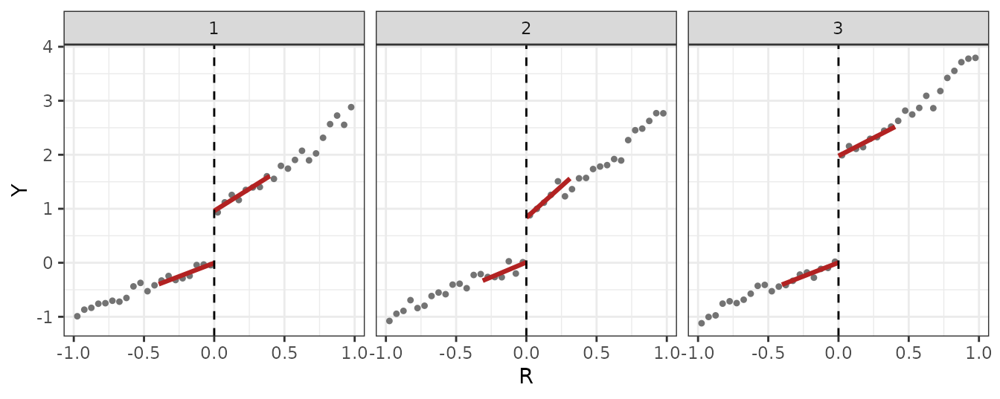

Setup
A treatment of interest W and a confounding treatment
V both switch at the same cutoff of a running variable
R. In comparison periods W is uniformly zero,
so the observed discontinuity in period
,
,
equals the confounding discontinuity
;
in the RD period,
.
With comparison-period weights
,
The DGP below has periods
as comparisons,
as the RD period, and a constant confounding discontinuity
alpha_true across periods.
m_a <- function(r, theta) r + (theta / 2) * r^2 * (r >= 0)
dgp_a <- function(n = 2000, alpha = c(1, 1, 1), theta = c(2, 2, 2), tau = 1, seed = 1) {
set.seed(seed)
R <- runif(n, -1, 1) # time-invariant running variable, cutoff at 0
u <- rnorm(n, 0, 0.5) # unit effect
do.call(rbind, lapply(1:3, function(t) {
V <- as.integer(R >= 0) # confounding treatment: sharp RD every period
W <- V * (t == 3) # treatment of interest: sharp RD in the RD period only
data.frame(id = seq_len(n), t = t, R = R,
Y = m_a(R, theta[t]) + alpha[t] * V + tau * W + u + rnorm(n, 0, 0.5))
}))
}
alpha_true <- c(1, 1, 1) # confounding discontinuity, alpha_t
tau_true <- 1 # ATT(t_RD)
dat <- dgp_a(alpha = alpha_true, tau = tau_true)
head(dat)
#> id t R Y
#> 1 1 1 -0.4689827 0.4680573
#> 2 2 1 -0.2557522 0.4935181
#> 3 3 1 0.1457067 1.3797469
#> 4 4 1 0.8164156 2.1865366
#> 5 5 1 -0.5966361 -1.3632511
#> 6 6 1 0.7967794 2.0669378The data are long: one row per unit-period, with columns
id, t, R, Y. This is
the input format every function below expects.
Per-period discontinuities
Each
is a standard local-linear RD, estimated one period at a time with
rd_bw_cct() (the per-period CCT/IK bandwidth) and
rd_period().
periods <- 1:3
per_period <- lapply(periods, function(t) {
d <- dat[dat$t == t, ]
bw <- rd_bw_cct(d$Y, d$R, c = 0)
fit <- rd_period(d$Y, d$R, h = unname(bw["h"]), b = unname(bw["b"]), id = d$id, c = 0)
list(d = d, fit = fit)
})
names(per_period) <- periods
truth <- alpha_true + tau_true * (periods == 3)
tab <- data.frame(
t = periods,
D = sapply(per_period, function(p) p$fit$D),
SE = sapply(per_period, function(p) sqrt(p$fit$V_D)),
D_bc = sapply(per_period, function(p) p$fit$D_bc),
SE_bc = sapply(per_period, function(p) sqrt(p$fit$V_D_bc)),
h = sapply(per_period, function(p) unname(p$fit$h)),
n = sapply(per_period, function(p) p$fit$n),
truth = truth
)
knitr::kable(tab, digits = 3,
col.names = c("t", "D", "SE", "D (bc)", "SE (bc)", "h", "n", "truth"))| t | D | SE | D (bc) | SE (bc) | h | n | truth |
|---|---|---|---|---|---|---|---|
| 1 | 0.966 | 0.103 | 0.957 | 0.121 | 0.395 | 2000 | 1 |
| 2 | 0.827 | 0.129 | 0.794 | 0.152 | 0.311 | 2000 | 1 |
| 3 | 1.975 | 0.117 | 1.985 | 0.141 | 0.403 | 2000 | 2 |
bin_w <- 0.05
binned <- do.call(rbind, lapply(periods, function(t) {
d <- per_period[[as.character(t)]]$d
bin <- (floor(d$R / bin_w) + 0.5) * bin_w
agg <- aggregate(d$Y, by = list(R = bin), FUN = mean)
names(agg)[2] <- "Y"
agg$t <- t
agg
}))
fit_lines <- do.call(rbind, lapply(periods, function(t) {
f <- per_period[[as.character(t)]]$fit
h <- unname(f$h)
rbind(
data.frame(t = t, side = "-", R = c(-h, 0),
Y = f$sides[["-"]]$beta0 + f$sides[["-"]]$slope * (c(-h, 0) - 0)),
data.frame(t = t, side = "+", R = c(0, h),
Y = f$sides[["+"]]$beta0 + f$sides[["+"]]$slope * (c(0, h) - 0))
)
}))
ggplot(binned, aes(R, Y)) +
geom_point(size = 0.9, colour = "grey45") +
geom_line(data = fit_lines, aes(group = side), colour = "firebrick", linewidth = 1.1) +
geom_vline(xintercept = 0, linetype = "dashed") +
facet_wrap(~ t, nrow = 1) +
theme_bw()
The comparison-period discontinuities, and , are the confounding ; the RD-period one, , is confounding plus ATT.
The RD-DID estimate
Averaging the two comparison-period discontinuities,
,
and subtracting from
gives 1.08. rddid() does the same aggregation:
res <- rddid(dat, y = "Y", x = "R", time = "t", id = "id", t_rd = 3,
comparisons = c(1, 2), weights = "constant", bwselect = "cct")
res
#> RD-DID estimate of ATT(t_RD)
#> RD period: 3 comparison periods: 1, 2
#> weights: constant [0.5, 0.5]
#> bandwidth: per-period CCT/IK
#> sampling scheme: PC (auto-detected)
#>
#> Estimate Std.Err. 95% CI
#> Conventional 1.07877 0.08881 [ 0.90471, 1.25283]
#> Robust 1.10971 0.10639 [ 0.90118, 1.31823]
#>
#> SEs by scheme (Robust): CS=0.17082 PC=0.10639 PV=0.10639- The two rows,
ConventionalandRobust, are the local-linear discontinuity estimator and its bias-corrected counterpart, each aggregated with the same weights. - The printed
Std.Err.and CI are for the auto-detected sampling scheme,res$scheme= “pc” — a panel with a time-constant running variable. - The last line,
SEs by scheme, lists the standard error under all three sampling schemes (res$estimates["Robust", "se_cs"],"se_pc","se_pv"); here they read 0.17, 0.11, and 0.11. - The
weightsline showsres$weights_type(“constant”) and the valuesres$weights. - The
bandwidthline reportsbwselect = "cct": each period is fit at its ownrd_bw_cct()bandwidth, sores$fitsare exactly the per-period fits built above. Other bandwidth rules and the sampling schemes are covered in the “Bandwidth rules and sampling schemes” vignette.
Linear confounding trend
alpha_lin <- 0.5 + 0.5 * (1:3)
dat_lin <- dgp_a(alpha = alpha_lin, tau = tau_true)
res_const <- rddid(dat_lin, y = "Y", x = "R", time = "t", id = "id", t_rd = 3,
comparisons = c(1, 2), weights = "constant", bwselect = "cct")
res_const$estimates[, c("est", "se")]
#> est se
#> Conventional 1.828770 0.08880653
#> Robust 1.859708 0.10639325
bias_truth <- alpha_lin[3] - mean(alpha_lin[1:2])With alpha_lin growing linearly across periods, constant
weights (the equal average of
)
net out only the average confounding level, leaving a bias of
against
:
the Conventional estimate, 1.83, sits near
.
For a linear confounding trend, set weights = "linear":
it extrapolates the line through the comparison-period
’s
to t_rd.
res_lin <- rddid(dat_lin, y = "Y", x = "R", time = "t", id = "id", t_rd = 3,
comparisons = c(1, 2), weights = "linear", bwselect = "cct")
res_lin$weights
#> 1 2
#> -1 2
res_lin$estimates[, c("est", "se")]
#> est se
#> Conventional 1.287077 0.1940728
#> Robust 1.354870 0.2283461
D1_lin <- res_lin$fits[["1"]]$D
D2_lin <- res_lin$fits[["2"]]$D
D3_lin <- res_lin$fits[["3"]]$D
pred_lin <- sum(res_lin$weights * c(D1_lin, D2_lin))res_lin$weights is -1, 2: extrapolating the line through
and
to
gives 1.69, subtracted from
to leave 1.29 (SE 0.19) next to
.
A numeric vector over comparisons supplies custom
weights. Under a constant confounding trend any weights summing to one
are admissible, e.g. on the constant-trend data:
res_custom <- rddid(dat, y = "Y", x = "R", time = "t", id = "id", t_rd = 3,
comparisons = c(1, 2), weights = c(0.3, 0.7), bwselect = "cct")
res_custom$estimates[, c("est", "se")]
#> est se
#> Conventional 1.106545 0.09013533
#> Robust 1.142396 0.10725730With only two comparison periods, the linear trend is just-identified: the line through passes through both points exactly, so the data cannot distinguish a constant from a linear confounding trend.